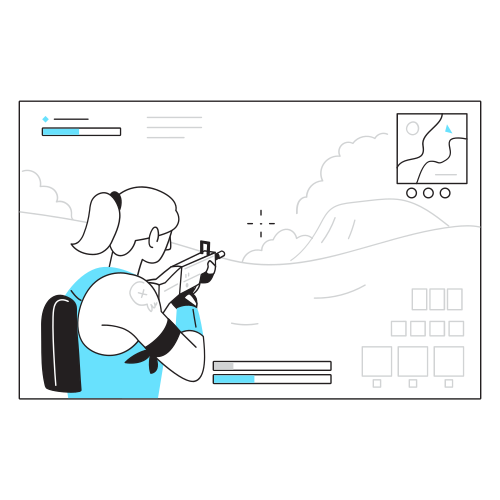
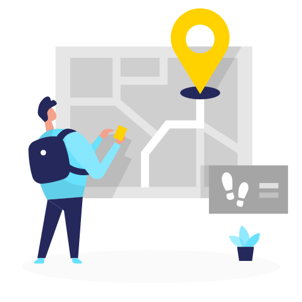
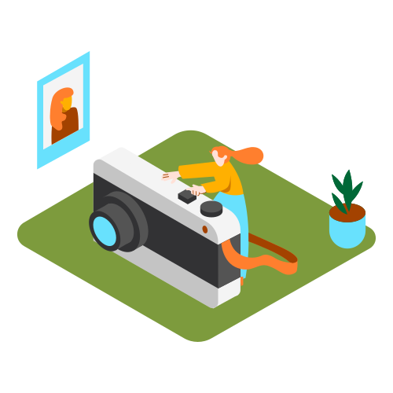
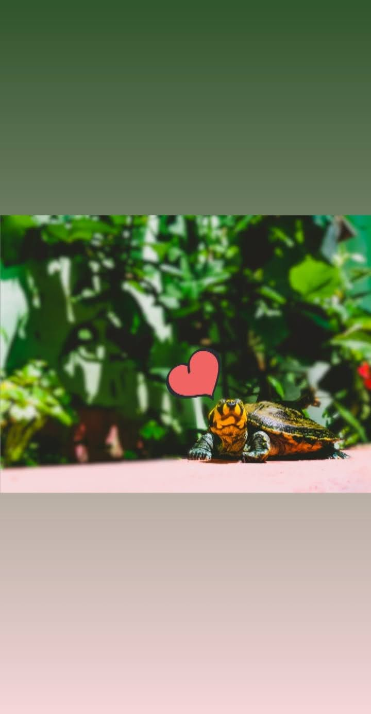
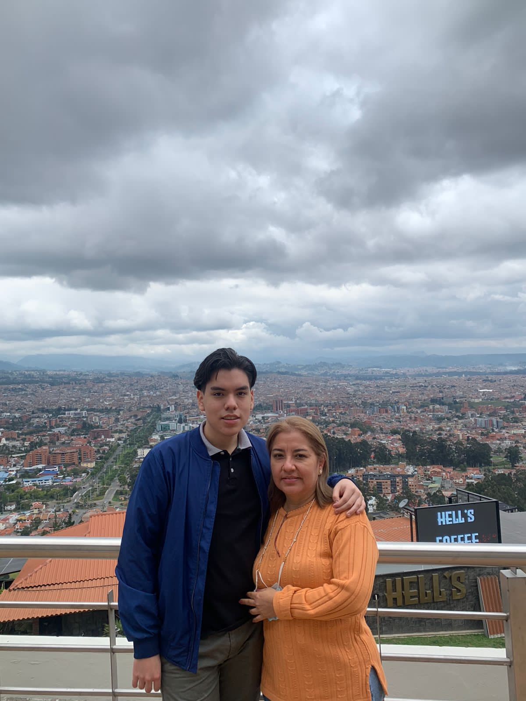
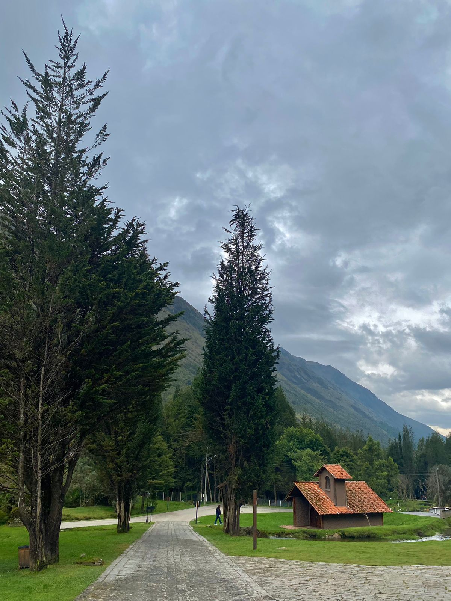
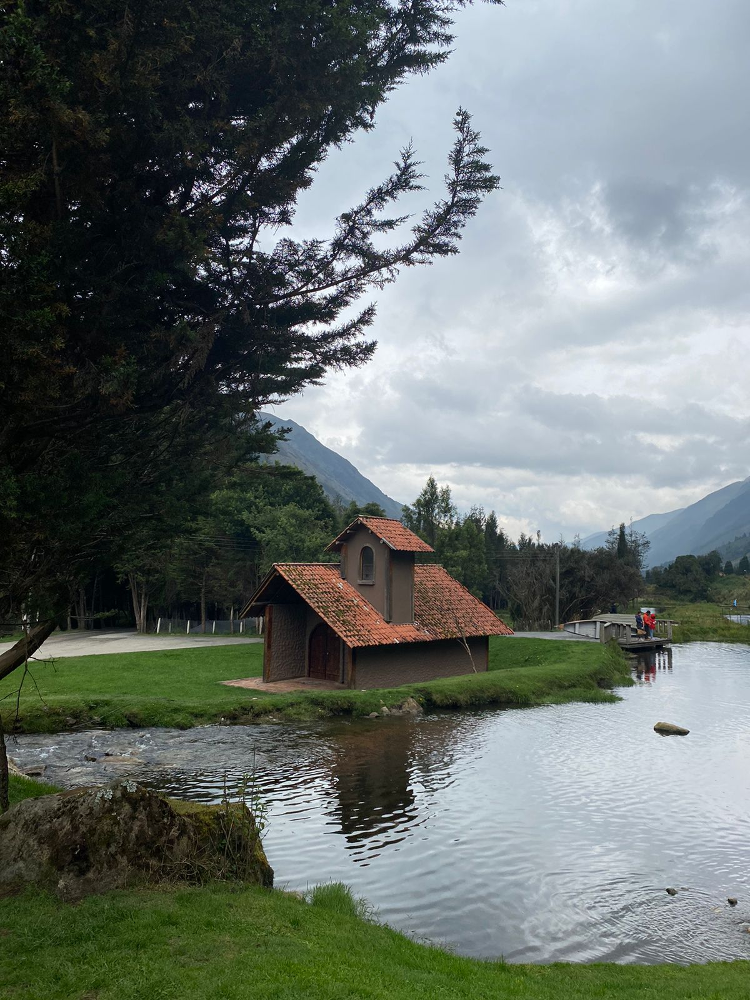

Mis Cualidades
1Puntual
Me considero una persona muy puntual. Siempre intento llegar a tiempo a los lugares programados y entregar tareas o proyectos dentro de los plazos establecidos. La impuntualidad es algo que me molesta.
2Responsable
Me considero una persona comprometida y diligente en mis responsabilidades. Siempre cumplo con mis tareas y compromisos de con atención al detalle.
3Honesto
Soy una persona íntegra que siempre cumple con sus compromisos. Me caracterizo por ser sincero y veraz en mis palabras y acciones. Me molestan las mentiras, sin importar su motivo.
Hobbies

Jugar
Programar

Viajar

Fotografiar
Galería



